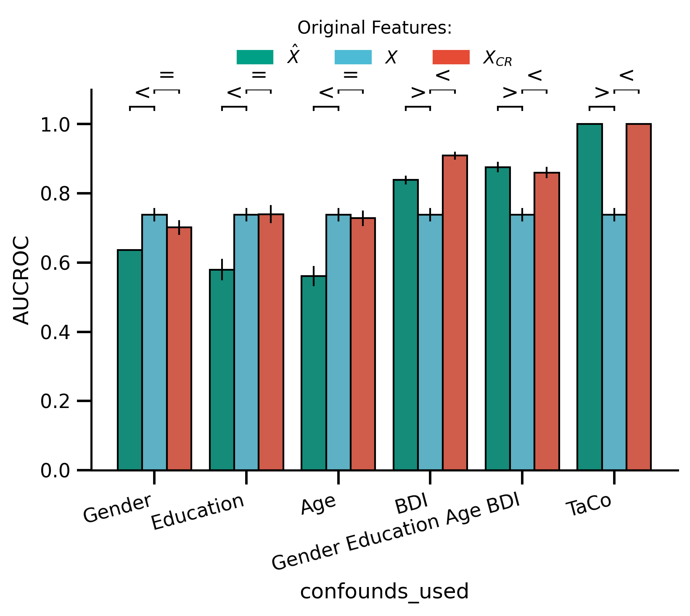
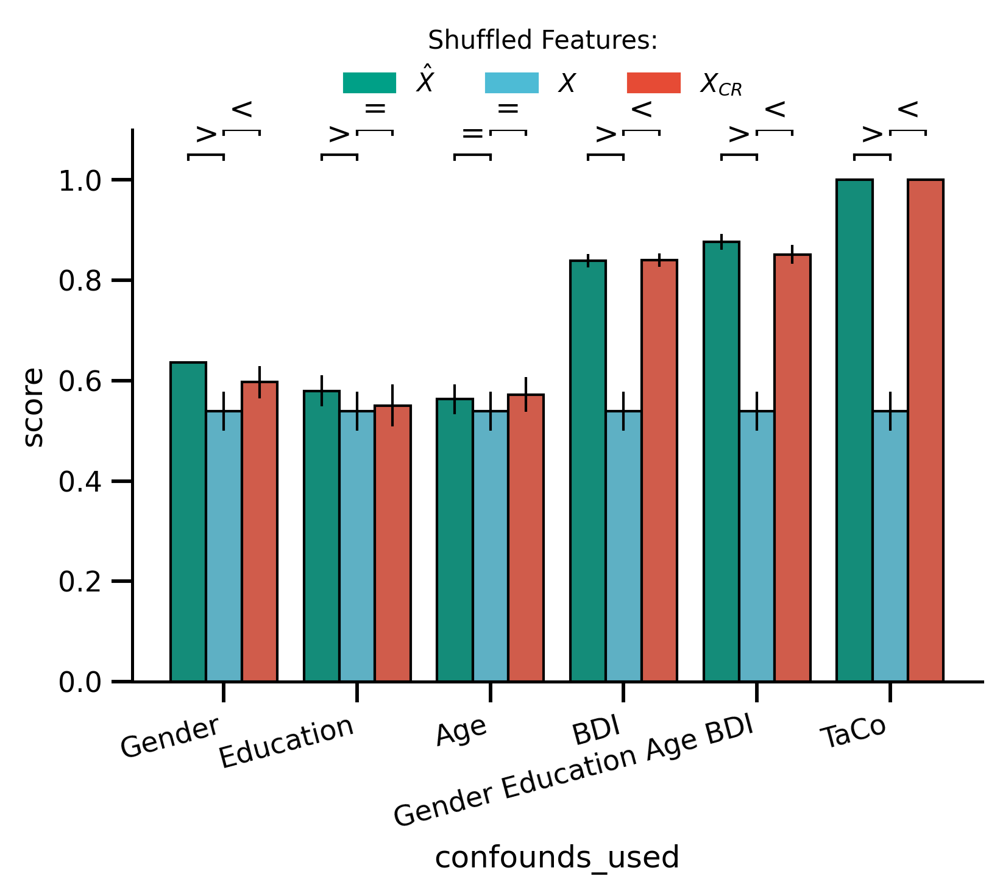

Analysis 3: Real World Datasets Audio Data
Contents
Analysis 3: Real World Datasets Audio Data¶
Imports, Functs and Paths
from scipy.stats import pointbiserialr
from myst_nb import glue
import pandas as pd
import matplotlib.pyplot as plt
import seaborn as sns
# plot styles
from sciplotlib import style
from leakconfound.analyses.load import gather_data, data_to_long, models_renamer
from leakconfound.plotting import custom_bar_rope_plot
from leakconfound.analyses.utils import save_paper_val
import matplotlib as mpl
base_save_paper = "./paper_val/"
results_base = '../../results/'
base_dir = '../../'
audio_data_non_TaCo_folder = f'{results_base}basic_non_TaCo/realistic_non_TaCo/'
audio_data_TaCo_folder = f'{results_base}basic_TaCo/realistic/'
audio_data_robust_non_TaCo_folder = f'{results_base}robust_cr_non_TaCo/realistic_non_TaCo/'
audio_data_shuffled_TaCo_folder = f'{results_base}shuffled_features_TaCo/realistic/'
audio_data_shuffled_non_TaCo_folder = (f'{results_base}'
'shuffled_features_non_TaCo/realistic_non_TaCo/')
colors = ['#E64B35', '#4DBBD5', '#00A087', '#3C5488',
'#F39B7F', '#8491B4', '#91D1C2FF', '#DC0000',
'#7E6148', '#B09C85']
red = colors[0]
blue = colors[1]
green = colors[2]
purple = colors[5]
def mm_to_inch(val_in_inch):
mm = 0.1/2.54
return val_in_inch * mm
mpl.style.use(style.get_style('nature-reviews'))
mpl.rc('xtick', labelsize=11)
mpl.rc('ytick', labelsize=11)
mpl.rc('axes', labelsize=12, titlesize=12)
mpl.rc('figure', dpi=300)
mpl.rc('figure.subplot', wspace=mm_to_inch(8), hspace=.7)
mpl.rc('lines', linewidth=1, markersize=2)
fig = plt.figure(figsize=[mm_to_inch(183),
mm_to_inch(140)],
)
<Figure size 2161.42x1653.54 with 0 Axes>
def correct_fold_repeat(df):
df.repeat = df.fold // 5
df.fold = df.fold % 5
return df
def convert_hat_scores(df):
_df = df.copy()
return (_df
.assign(
is_X_hat=lambda df: df.score_name.str.contains("X_hat")
)
.assign(
confound=lambda df: df.apply(
lambda row: "X hat" if row["is_X_hat"] else row["confound"], axis=1
))
.assign(
score_name=lambda df: df.score_name.str.replace("X_hat_", "")
)
)
def correct_columns(df):
return correct_fold_repeat(convert_hat_scores(df))
Some info on the data
data = pd.read_csv('../../data/realistic/audio_data/audio_data.csv')
bdi_median = data.BDI__continuous_confound.median()
bdi = data.BDI__continuous_confound.apply(lambda x: x > bdi_median)
adhd = data.ATT_Task__binary_target
print(pd.crosstab(adhd, bdi))
corr, p = pointbiserialr(bdi, adhd)
save_paper_val(base_save_paper,
"real_world",
"relation_BDI_ADHD",
"p_pointbiserial",
p, precision=3)
save_paper_val(base_save_paper,
"real_world",
"relation_BDI_ADHD",
"r_pointbiserial",
corr)
print(f"pointbiserialr, r={corr:.2},p={p:.2}")
BDI__continuous_confound False True
ATT_Task__binary_target
0.0 55 8
1.0 17 46
pointbiserialr, r=0.61,p=3.7e-14
Performance TaCo with Original Data¶
use_models = ["Linear/Logistic", "Decision Tree", 'Random Forest']
arguments_TaCo = ['data', 'model_name',
'is_deconfounded', 'random_seed']
score_names = [
'test_roc_auc',
'test_X_hat_roc_auc',
]
df_long_TaCo = (
gather_data(audio_data_TaCo_folder, arguments_TaCo)
.assign(model_name=lambda df: df.model_name.map(models_renamer))
.query('(data.str.startswith("audio"))')
.pipe(data_to_long, analysis_arguments=arguments_TaCo,
score_names=score_names)
.pipe(correct_columns)
)
Mrf_rem = df_long_TaCo.query(
'(confound == "removed") & (model_name=="Random Forest")').groupby("repeat").mean().score
Mrf_no_rem = df_long_TaCo.query(
'(confound == "not removed") & (model_name=="Random Forest")').groupby("repeat").mean().score
print(
f"Performance no removal using RF M={Mrf_no_rem.mean():.2}, sd={Mrf_no_rem.std():.2}")
print(
f"Performance after TaCo removal using RF M={Mrf_rem.mean():.2}, sd={Mrf_rem.std():.2}")
save_paper_val(base_save_paper, "real_world", "raw",
"mean_audio_TaCo.txt", Mrf_no_rem.mean())
save_paper_val(base_save_paper, "real_world", "raw",
"std_audio_TaCo.txt", Mrf_no_rem.std())
save_paper_val(base_save_paper, "real_world", "removed",
"mean_audio_TaCo.txt", Mrf_rem.mean())
save_paper_val(base_save_paper, "real_world", "removed",
"std_audio_TaCo.txt", Mrf_rem.std())
Performance no removal using RF M=0.71, sd=0.017
Performance after TaCo removal using RF M=0.81, sd=0.017
Performance TaCo with Shuffled Data¶
df_long_shuffled_TaCo = (
gather_data(audio_data_shuffled_TaCo_folder, arguments_TaCo)
.assign(model_name=lambda df: df.model_name.map(models_renamer))
.query('(data.str.startswith("audio"))')
.pipe(data_to_long, analysis_arguments=arguments_TaCo,
score_names=score_names)
.pipe(correct_columns)
)
Mrf_shuffled_rem = df_long_shuffled_TaCo.query(
'(confound == "removed") & (model_name=="Random Forest")').groupby("repeat").mean().score
Mrf_shuffled_no_rem = df_long_shuffled_TaCo.query(
'(confound == "not removed") & (model_name=="Random Forest")').groupby("repeat").mean().score
print("shuffled Results:")
print(
f"Performance no removal using RF M={Mrf_shuffled_no_rem.mean():.2},"
f" sd={Mrf_shuffled_no_rem.std():.2}")
print(
f"Performance after TaCo removal using RF M={Mrf_shuffled_rem.mean():.2},"
f" sd={Mrf_shuffled_rem.std():.2}"
)
save_paper_val(base_save_paper, "real_world", "raw",
"mean_audio_TaCo_shuffled.txt", Mrf_shuffled_no_rem.mean())
save_paper_val(base_save_paper, "real_world", "raw",
"std_audio_TaCo_shuffled.txt", Mrf_shuffled_no_rem.std())
save_paper_val(base_save_paper, "real_world", "removed",
"mean_audio_TaCo_shuffled.txt", Mrf_shuffled_rem.mean())
save_paper_val(base_save_paper, "real_world", "removed",
"std_audio_TaCo_shuffled.txt", Mrf_shuffled_rem.std())
shuffled Results:
Performance no removal using RF M=0.48, sd=0.04
Performance after TaCo removal using RF M=0.77, sd=0.02
arguments = ['data', 'model_name', 'is_deconfounded', 'random_seed', "confounds_used"]
confounds_used_pattern = r"confounds=\[(.+?)\]"
df_long_non_TaCo = (
gather_data(audio_data_non_TaCo_folder, arguments)
.assign(
model_name=lambda df: df.model_name.map(models_renamer),
)
.query('(data.str.startswith("audio"))')
.pipe(data_to_long, analysis_arguments=arguments,
score_names=score_names)
.pipe(correct_columns)
)
df_long_shuffled_non_TaCo = (
gather_data(audio_data_shuffled_non_TaCo_folder, arguments)
.assign(model_name=lambda df: df.model_name.map(models_renamer),
)
.query('(data.str.startswith("audio"))')
.pipe(data_to_long, analysis_arguments=arguments,
score_names=score_names)
.pipe(correct_columns)
)
Performance for each Confound Separated¶
print('Performance using RF ')
print('_'*40)
print()
for confounds_used in df_long_non_TaCo.confounds_used.unique():
Mrf_rem = (df_long_non_TaCo
.query('(confounds_used == @confounds_used) & '
'(model_name == "Random Forest") &'
'(confound == "removed")'
)
.groupby('repeat').score.mean()
)
Mrf_no_rem = (df_long_non_TaCo
.query('(confounds_used == @confounds_used) & '
'(model_name == "Random Forest") &'
'(confound == "not removed")'
)
.groupby('repeat').score.mean()
)
Mrf_rem_Xhat = (df_long_non_TaCo
.query('(confounds_used == @confounds_used) & '
'(model_name == "Random Forest") &'
'(confound == "X hat")'
)
.groupby('repeat').score.mean()
)
Mrf_no_rem_Xhat = (df_long_non_TaCo
.query('(confounds_used == @confounds_used) & '
'(model_name == "Random Forest") &'
'(confound == "X hat")'
)
.groupby('repeat').score.mean()
)
Mrf_rem_shuff = (df_long_shuffled_non_TaCo
.query('(confounds_used == @confounds_used) & '
'(model_name == "Random Forest") &'
'(confound == "removed")'
)
.groupby('repeat').score.mean()
)
Mrf_no_rem_shuff = (df_long_shuffled_non_TaCo
.query('(confounds_used == @confounds_used) & '
'(model_name == "Random Forest") &'
'(confound == "not removed")'
)
.groupby('repeat').score.mean()
)
print("Confound: ", confounds_used)
print("Raw:")
print(
f"No removal M={Mrf_no_rem.mean():.2}, sd={Mrf_no_rem.std():.2}")
print(
f"After CR M={Mrf_rem.mean():.2}, sd={Mrf_rem.std():.2}")
print("Xhat:")
print(
f"No removal M={Mrf_no_rem_Xhat.mean():.2}, sd={Mrf_no_rem_Xhat.std():.2}")
print(
f"After CR M={Mrf_rem_Xhat.mean():.2}, sd={Mrf_rem_Xhat.std():.2}")
print("Shuffled:")
print(
f"No removal M={Mrf_no_rem_shuff.mean():.2}, sd={Mrf_no_rem_shuff.std():.2}")
print(
f"After CR M={Mrf_rem_shuff.mean():.2}, sd={Mrf_rem_shuff.std():.2}")
print('_'*40)
print()
save_paper_val(base_save_paper, "real_world", "raw",
f"mean_audio_conf_{confounds_used}.txt", Mrf_no_rem.mean())
save_paper_val(base_save_paper, "real_world", "raw",
f"std_audio_conf_{confounds_used}.txt", Mrf_no_rem.std())
save_paper_val(base_save_paper, "real_world", "removed",
f"mean_audio_conf_{confounds_used}.txt", Mrf_rem.mean())
save_paper_val(base_save_paper, "real_world", "removed",
f"std_audio_conf_{confounds_used}.txt", Mrf_rem.std())
# X hat
save_paper_val(base_save_paper, "real_world", "Xhat",
f"mean_audio_conf_{confounds_used}.txt", Mrf_no_rem_Xhat.mean())
save_paper_val(base_save_paper, "real_world", "Xhat",
f"std_audio_conf_{confounds_used}.txt", Mrf_no_rem_Xhat.std())
# Shuffled
save_paper_val(base_save_paper, "real_world", "raw",
f"mean_audio_conf_{confounds_used}_shuffled.txt", Mrf_no_rem_shuff.mean())
save_paper_val(base_save_paper, "real_world", "raw",
f"std_audio_conf_{confounds_used}_shuffled.txt", Mrf_no_rem_shuff.std())
save_paper_val(base_save_paper, "real_world", "removed",
f"mean_audio_conf_{confounds_used}_shuffled.txt", Mrf_rem_shuff.mean())
save_paper_val(base_save_paper, "real_world", "removed",
f"std_audio_conf_{confounds_used}_shuffled.txt", Mrf_rem_shuff.std())
Performance using RF
________________________________________
Confound: Gender
Raw:
No removal M=0.74, sd=0.02
After CR M=0.7, sd=0.021
Xhat:
No removal M=0.64, sd=0.0014
After CR M=0.64, sd=0.0014
Shuffled:
No removal M=0.54, sd=0.039
After CR M=0.6, sd=0.032
________________________________________
Confound: Gender_Education_Age_BDI
Raw:
No removal M=0.74, sd=0.02
After CR M=0.86, sd=0.016
Xhat:
No removal M=0.88, sd=0.016
After CR M=0.88, sd=0.016
Shuffled:
No removal M=0.54, sd=0.039
After CR M=0.85, sd=0.019
________________________________________
Confound: Education
Raw:
No removal M=0.74, sd=0.02
After CR M=0.74, sd=0.026
Xhat:
No removal M=0.58, sd=0.031
After CR M=0.58, sd=0.031
Shuffled:
No removal M=0.54, sd=0.039
After CR M=0.55, sd=0.042
________________________________________
Confound: Age
Raw:
No removal M=0.74, sd=0.02
After CR M=0.73, sd=0.022
Xhat:
No removal M=0.56, sd=0.029
After CR M=0.56, sd=0.029
Shuffled:
No removal M=0.54, sd=0.039
After CR M=0.57, sd=0.034
________________________________________
Confound: BDI
Raw:
No removal M=0.74, sd=0.02
After CR M=0.91, sd=0.011
Xhat:
No removal M=0.84, sd=0.013
After CR M=0.84, sd=0.013
Shuffled:
No removal M=0.54, sd=0.039
After CR M=0.84, sd=0.013
________________________________________
Plotting Relation of Confounds used to no removal v removal v Xhat
df_bar_plot = pd.concat([
df_long_non_TaCo.copy().query("model_name == 'Random Forest'"),
(df_long_TaCo
.assign(confounds_used="TaCo")
.query("model_name == 'Random Forest'")
.query("data == 'audio_data'")
.reset_index(drop=True)
)
]).dropna().reset_index(drop=True)
fig, ax = plt.subplots()
custom_bar_rope_plot(
x='confounds_used', y='score', hue='confound', ax=ax,
hue_order=["X hat", "not removed", "removed"],
comparisons=(('X hat', 'not removed'), ("not removed", "removed"),),
comparisons_sing_y=(1.05, 1.1,),
cv_repeats="repeat", data=df_bar_plot,
rope=0.05, order=["Gender", "Education", "Age", "BDI",
"Gender_Education_Age_BDI", "TaCo"],
palette=sns.color_palette([green, blue, red]),
show_legend=False
)
ax.set_xticklabels([i.get_text().replace("_", " ") for i in ax.get_xticklabels()],
rotation=15, ha="right")
ax.set_ylim(0, 1.1)
ax.set_ylabel("AUCROC")
handles = [
mpl.patches.Patch(color=green, label=r'$\hat{X}$'),
mpl.patches.Patch(color=blue, label='$X$'),
mpl.patches.Patch(color=red, label='$X_{CR}$')
]
fig.legend(handles=handles,
title="Original Features:",
loc='upper center',
bbox_to_anchor=(0.5, 1.05),
ncol=3,)
fig.savefig('./saved_figures/all_confounds_audio_performance.svg')
fig.savefig('./saved_figures/all_confounds_audio_performance.png')
fig.savefig('./saved_figures/all_confounds_audio_performance.pdf')
glue('all_confounds_performance', fig)

df_bar_plot_shuffled = pd.concat([
df_long_shuffled_non_TaCo.copy().query("model_name == 'Random Forest'"),
(df_long_shuffled_TaCo
.assign(confounds_used="TaCo")
.query("model_name == 'Random Forest'")
.query("data == 'audio_data'")
.reset_index(drop=True)
)
]).dropna().reset_index(drop=True)
fig, ax = plt.subplots()
custom_bar_rope_plot(
x='confounds_used', y='score', hue='confound', ax=ax,
hue_order=["X hat", "not removed", "removed"],
comparisons=(('X hat', 'not removed'), ("not removed", "removed"),),
comparisons_sing_y=(1.05, 1.1,),
cv_repeats="repeat", data=df_bar_plot_shuffled,
rope=0.05, order=["Gender", "Education", "Age", "BDI",
"Gender_Education_Age_BDI", "TaCo"],
palette=sns.color_palette([green, blue, red]),
show_legend=False
)
ax.set_xticklabels([i.get_text().replace("_", " ") for i in ax.get_xticklabels()],
rotation=15, ha="right")
ax.set_ylim(0, 1.1)
fig.legend(handles=handles,
title="Shuffled Features:",
loc='upper center',
bbox_to_anchor=(0.5, 1.05),
ncol=3,)
fig.savefig('./saved_figures/all_shuffled_confounds_audio_performance.svg')
fig.savefig('./saved_figures/all_shuffled_confounds_audio_performance.png')
fig.savefig('./saved_figures/all_shuffled_confounds_audio_performance.pdf')
glue('all_shuffled_confounds_performance', fig)
